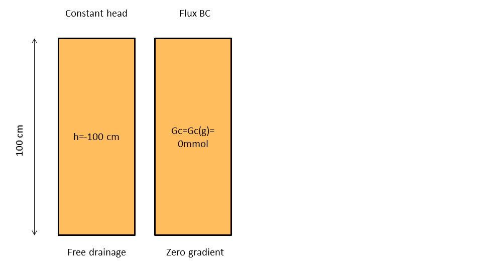
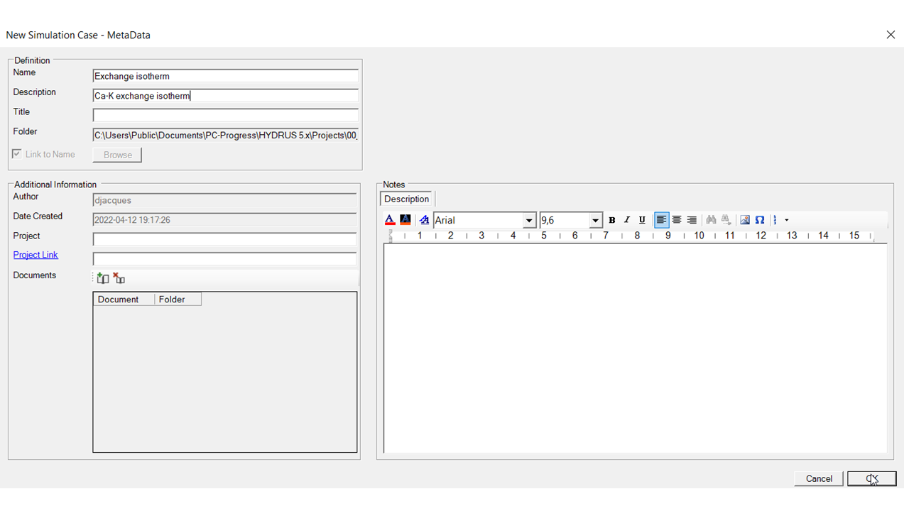
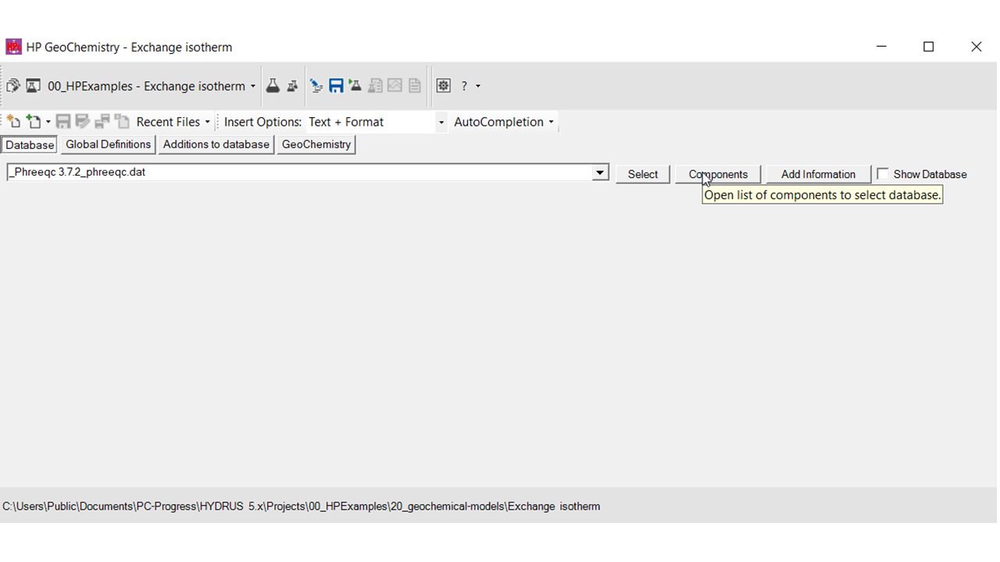
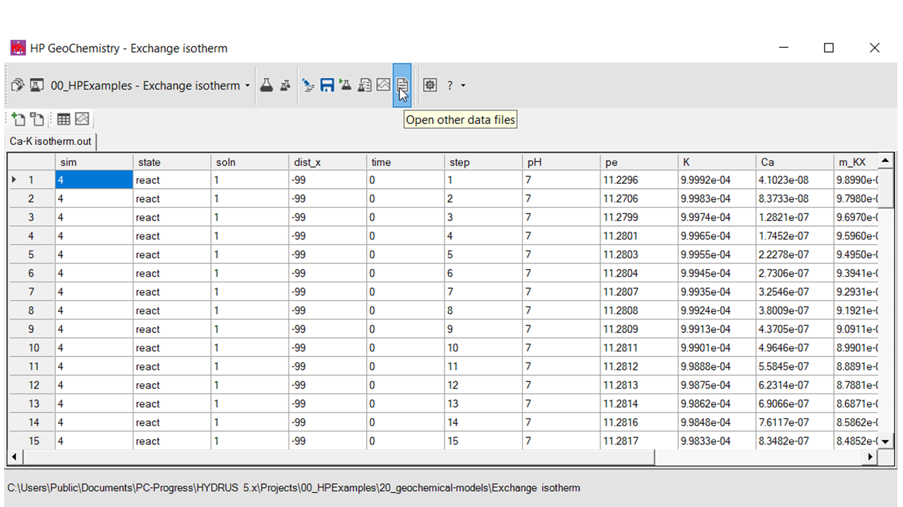

Default databases for reactive transport projects
There are two ways to define default databases:
- Via HYDRUS 5.xx: The default database is defined in the GUI HYDRUS 5.xx. It is not possible to define a managed project.
- Via HPGeochemistry: When a managed project is created, a project group is also created in HYDRUS 5.xx. Default database are automatically set, but can be adapted.
In both cases, default databases can be adapted via Database Settings (for HYDRUS 5.xx, via the Input Workspace).
Initiation from HYDRUS 5.x
The default database is set when you launch for the first time a geochemical model is implemented in one of the projects in a project group. Later on, changes to the default database are made via the dialogue window for implementing the geochemical model.
Hereafter, the steps up to definition of the default database are described:
Create New Project Group
The Project Manager of HYDRUS 5.x allows for creating a new project group (see ).
The Project Manager is opened via:
- CTRL+M
- The project manager icon in the toolbar
- File -> Project Manager in the
In the Project Groups tab, a new project group is created via the Edit button.
Create New Project
In the Project Manager, go to the Project tab and create a new project (see ).

Select HPx
Navigate to Flow and Transport Processes -> Main Processes and Modules
Select Solute Transport
Select HP1 or HP2 - this depends on the Domain Type (selected in Geometry)

Open the Input Workspace for the geochemical model
Navigate to Flow and Transport Processes -> Solute Transport -> HP Input Data
Because it is the first time that the Input Workspace is opened in the project group, a dialogue window opens in which the default database can be selected.

If the checkbox in the Use Default column is checked, each new project in this project group will take the defined default database. Otherwise, the database will have to be selected in the Input Workspace via the Database Panel.
If the checkbox in the Use General Default column is checked, the default database is taken from the general settings that can be reached via Database Settings when the Input Workspace is active.Otherwise, the database has to be set via the Select Project Database button that opens the Database Manager.

Note: when a project group is defined via HYDRUS 5.xx, it is not possible to create a managed project. Selection of the managed group check box will have no effect.
Initiation via HPGeochemistry
A project group in HYDRUS 5.xx can be initiated via HPGeochemistry as well. A large advantage is that it is possible to have a managed project structure for reactive transport projects as well.
Create a managed project in HPGeochemistry
See example Define a new managed project
By default, the folder 21_transport-models is created in the project folder. In addition, a project group is added to HYDRUS 5.xx with the same name as the HPGeochemistry project.
Create project in HYDRUS 5.xx
After re-open HYDRUS 5.xx, a project group is added (path leading to .\21_transport-models\). Projects are thus created in that folder.
When the Input Workspace is opened for the first time in the project group, the same dialogue as above will appear. This allows to set a different default database for reactive transport problems than for geochemical problems.
Created with the Personal Edition of HelpNDoc: Easily create EBooks